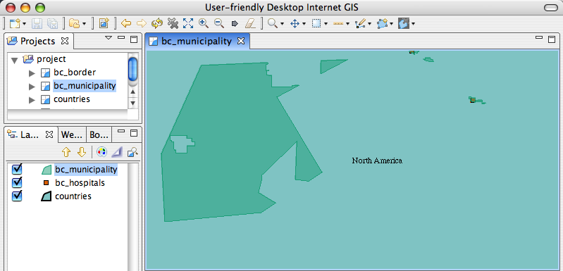

Diese Werkzeuge arbeiten an bestehenden Features (geogr. Objekten). Sie dienen bspw. dazu, Features zu teilen oder zu löschen.
Zu diesen Werkzeugen gehören:
Das Differenzwerkzeug erlaubt es, Polygone zu zeichnen, von denen anschließend automatisch alle Bereiche (Flächen) entfernt werden, die bereits duch andere Polygone abgedeckt sind.

Dieses Bild zeigt die Verwendung des Differenzwerkzeugs zum Zeichnen eines Polygons.

Hier sehen Sie die daraus resultierende Geometrie. Zur Klarheit wurden die anderen Features mittels Löschwerkzeug aus der Karte entfernt.

Das Trennwerkzeug dient schlichtweg dazu, Features "durchzuschneiden", also aus einem Polygon oder einer Linie mehrere zu erzeugen. Ziehen Sie dazu einfach eine ein- oder mehrteilige Linie durch ein bestehendes Feature. Mit einem Doppelklick Führen Sie den Trennvorgang aus.

Das Löschwerkzeug entfernt angeklickte Features aus dem aktuellen Kartenlayer.

Das Bild zeigt das Löschwerkzeug vor dem Klicken auf ein Feature.

Hier sehen Sie das Ergebnis des Löschvorgangs - Ungarn ist weg.
Weiter im Tutorial: 7 Fenster und Editoren anordnen
 (c) Copyright (c) 2004-2008 Refractions Research Inc. and others.
(c) Copyright (c) 2004-2008 Refractions Research Inc. and others.